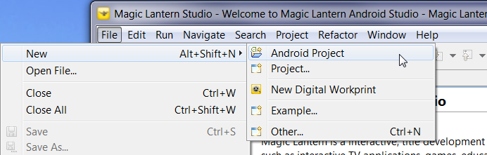
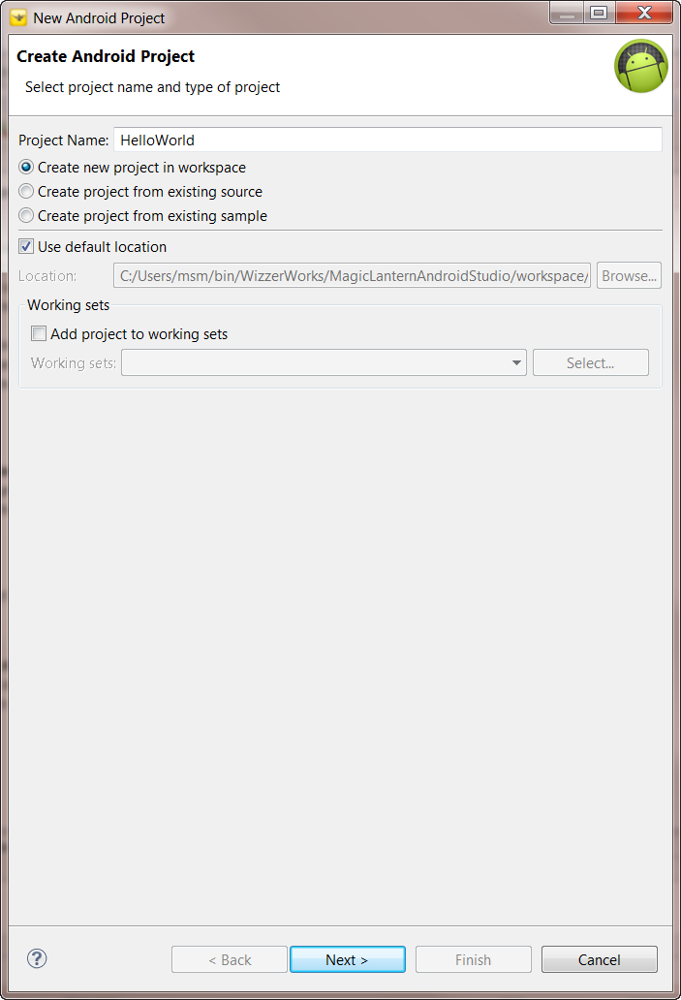
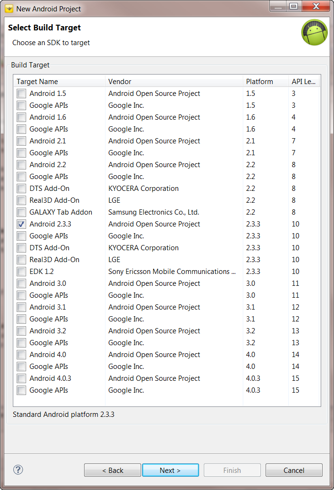
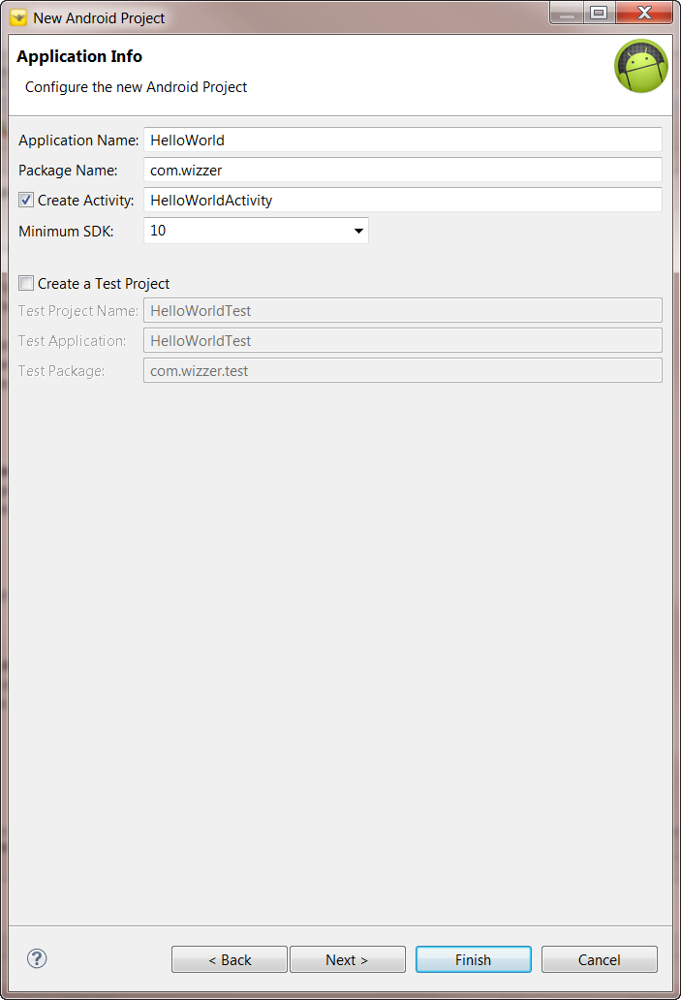
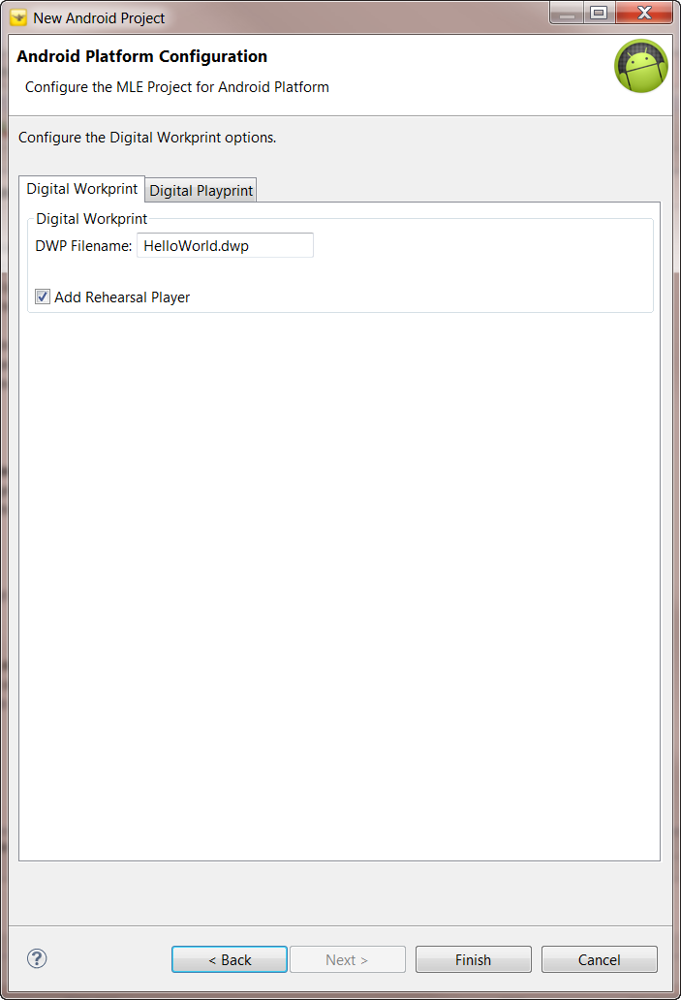
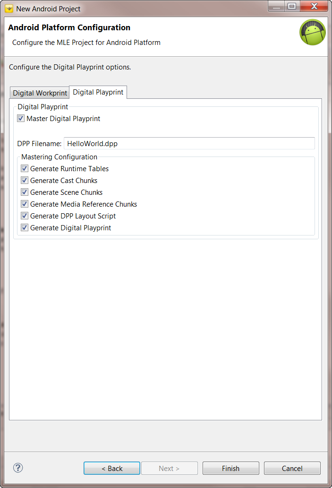
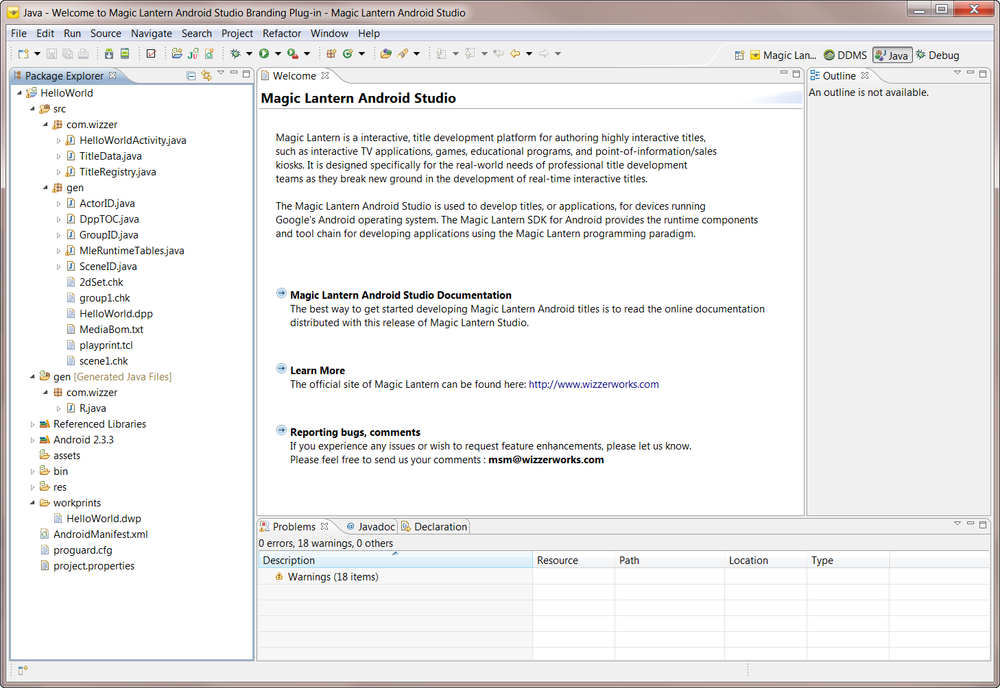

Creating a Magic Lantern Project
This document discusses how to create a project in Magic Lantern Android
Studio. A project is created using the New Magic Lantern Android Project
wizard. The wizard is used to create a project in the Eclipse workspace, specifying
the Android SDK that the title will be targeted for. The
wizard also helps the developer identify the Digital Workprint and Digital
Playprint configuration for the Magic Lantern title. To simplify title development,
the developer can use the wizard to select a title sample to base his/her
application on.
To create a Magic Lantern Project, do the following:
-
Select "
File->New->Project..."
from the main Eclipse menu toolbar. This will bring up a New wizard selection
dialog box (see Figure 2.1).

Figure 2.1: New Wizard Selection Dialog
- Select the "Magic Lantern" category
to list the Magic Lantern wizard selections.

Note: An alternative way to select
the New Magic Lantern Android Project wizard is to use the shortcut in
the Magic Lantern Studio Perspective. Figure 2.2 shows how to use this
shortcut.

Figure 2.2: Using Perspective Shortcut to Create a New Project
- Double-click on "Android Project"
to select the New Magic Lantern Android Project wizard. Figure 2.3
shows the new wizard.

Figure 2.3: New Magic Lantern Project Wizard
- Type in the name of the project. For example, Figure 2.3 shows HelloWorld
being used. For this example, leave the rest of the configuration parameters
in thier default state.
- Select the "Next >" buton to continue.
The wizard proceeds to the next page, displaying the dialog for selecting the Android target SDK.
This version of Magic Lantern only supports version 2.3.3. As shown in Figure 2.4, select the
Android 2.3.3 target platform.

Figure 2.4: Android Target Selection
- Select the "Next >" buton to continue.
The wizard proceeds to the next page, displaying the dialog for configuring the new Android project.
Type in a package name for the application. In Figure 2.5, the package name is configured for
com.wizzer. Leave the rest of the configuration set to the default values.

Figure 2.5: Android Project Configuration
- Select the "Next >" buton to continue.
The wizard proceeds to the next page, displaying the user interface for identifying
the name of the Magic Lantern Digital Workprint. If you wish to change the
name of the Digital Workprint, do so now. See Figure 2.4.

Figure 2.4: Magic Lantern Android Configuration Page - Digital Workprint
Note: The Rehearsal Player is not currently
available with this release of Magic Lantern. Selecting the "Add
Rehearsal Player" button will do nothing.
- Select the "Digital Playprint" tab.
Figure 2.5 shows the configuration options for mastering the title. In this
example, we will use the default mastering configuration.

Figure 2.5: Magic Lantern Android Configuration Page - Digital Playprint
- To complete setting up your Magic Lantern Studio project, select "Finish".
This will create the project and master the default template for the Android 2.3.3 target.
The wizard will ask you if you wish to change perspectives from the Magic
Lantern Studio Perspective to the Java Perspective. Select "Yes"
to switch perspectives.
- The HelloWorld project should now appear in the Package Explorer on the
left-hand side of the Java perspective. If you expand the project hierarchy,
you should see something like Figure 2.6.

Figure 2.6: HelloWorld Project
The default template is the simplest title that can be mastered for the Android
target. The title consists of a Stage with a single Set.
The Stage is implemented as a Android View. The title does not contain
any Actors. Executing the title will display an empty window
(Android View).
Title Structure
The top level directories, src and gen in Figure 2.6, contain
the source that was generated by the application template. The main title source is found in the
src/com.wizzer, and gen packages.
The second gen directory, located under src, is where the
mastered elements exist. The mastered elements were generated from the Digital
Workprint located in the workprints directory. The Digital
Workprint for this example is called HelloWorld.dwp.
For more information concerning the title components, please read the section
on "Title Structure".
Executing the Title
To execute the title, you will need to create an Android launch configuration.
If you are anxious to see this title run, then please proceed to "Executing
the Title".